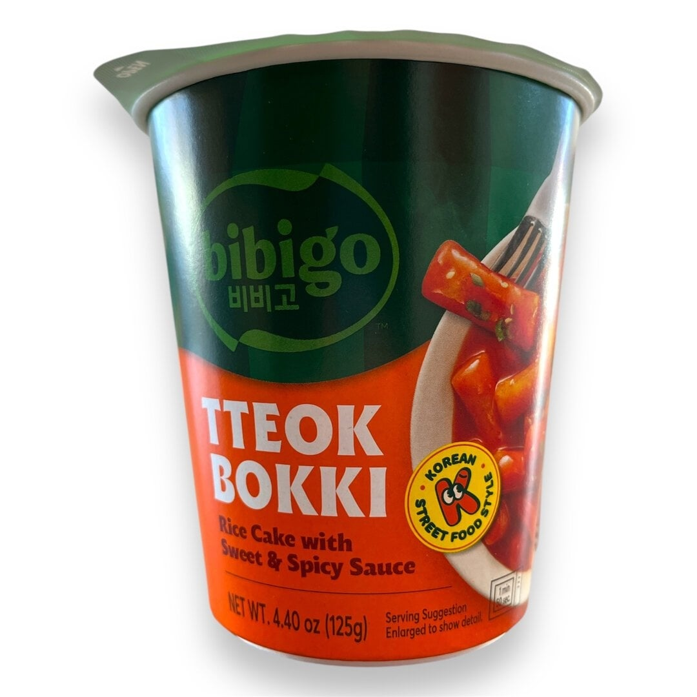
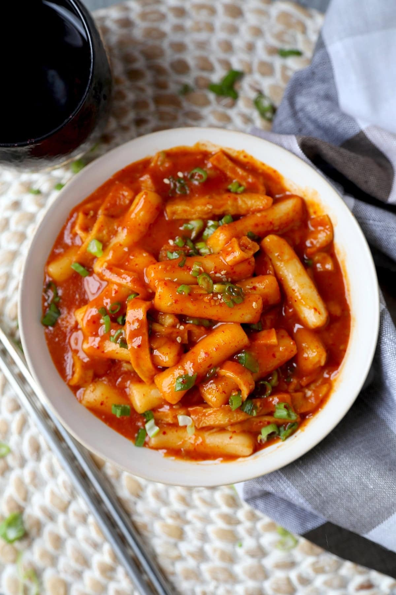

<div> <table style="border-collapse: collapse; width: 99.9809%;" border="1"><colgroup><col style="width: 49.9522%;"><col style="width: 49.9522%;"></colgroup> <tbody> <tr> <td> <div><strong><span style="font-size: 14pt;">Bibigo Roluri de orez cu sos iute-condimentat</span></strong></div> <div><strong><span style="font-size: 14pt;">125g</span></strong></div> <div><span style="font-size: 14pt;">Street-food autentic, gata in cateva minute. Experimenteaza legendara gustare coreeana cu Bibigo Tteokbokki. Prajiturile din orez moi si gumase se imbina perfect cu un sos intens, dulce-picant, oferindu-ti savoarea originala si reconfortanta a retetelor traditionale din Seul, intr-un format extrem de practic.</span></div> </td> <td></td> </tr> <tr> <td></td> <td><span style="font-size: 14pt;">Baza perfecta pentru tteokbokki-ul tau. Aceste prajituri din orez de o calitate exceptionala ofera acea textura gumasa si densa, adorata in Coreea. Gata de absorbit aromele sosului dulce-picant, sunt esentiale pentru a recrea acasa cel mai iubit preparat de tip street-food din Seul.</span></td> </tr> <tr> <td><span style="font-size: 14pt;">Savureaza un bol aburind de tteokbokki pregatit ca la carte. Prajiturile din orez, scaldate intr-un sos dens, stralucitor si intens condimentat, alaturi de ou fiert si seminte de susan, iti ofera un contrast spectaculos de texturi si o explozie de arome asiatice.</span></td> <td></td> </tr> </tbody> </table> </div>